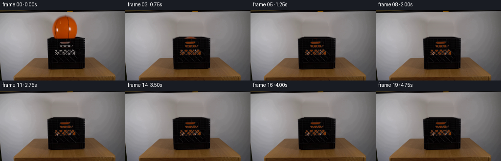
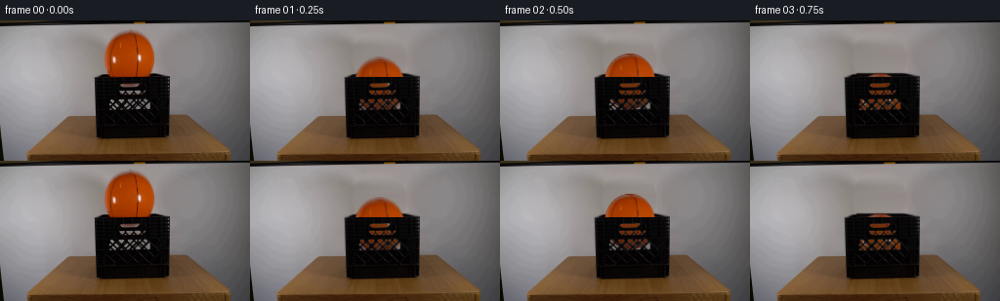

CODING AGENTS AS PIXEL WORLD MODELS
traex/GPT-6.1-Sol · 0014
点击播放 · 原生 RGB 像素
此结果可播放，但该运行尚未通过最终提交审核。页面展示不代表评测通过。
逐轮保存的候选
回放视频、检查图与代码变化。
每份候选均可单独播放。实际图片检查记录在下方工具轨迹中。
候选 01播放与检查图
点击播放 · 原生 RGB 像素


展开代码变化
--- 上一保存版本
+++ 本次保存版本
@@ -0,0 +1,168 @@
+"""Reconstruct and animate the supplied tabletop drop using RGB operations."""
+from pathlib import Path
+import numpy as np
+from PIL import Image
+import cv2
+from scipy.ndimage import gaussian_filter, map_coordinates
+from artifact_io import save
+
+ROOT = Path(__file__).resolve().parent
+H,W=144,256
+Y,X=np.mgrid[:H,:W].astype(np.float64)
+CX,CY,RX,RY=132.0831493,38.8287240,25.8459164,28.5527070
+
+
+def prepare(image):
+ xx=(X-CX)/RX; yy=(Y-CY)/RY
+ q=xx*xx+yy*yy
+ # Only the ball and its original subpixel boundary are reconstructed.
+ erased=(q<1.14)&(Y<59)
+ src=image.astype(float)
+ bg=src.copy()
+ # The distant gray wall is gently varying; interpolate its measured side
+ # samples horizontally, retaining the fine sensor texture.
+ rng=np.random.default_rng(414)
+ noise=gaussian_filter(rng.normal(0,.70,(H,W,3)),.4)
+ for j in range(9,55):
+ if not erased[j].any(): continue
+ ids=np.flatnonzero(erased[j]); l=ids.min(); r=ids.max()
+ l1=max(90,l-5); r1=min(181,r+5)
+ lv=src[j,max(0,l1-2):l1+1].mean(0)
+ rv=src[j,r1:r1+3].mean(0)
+ u=np.clip((X[j]-l1)/(r1-l1),0,1)
+ val=lv[None,:]*(1-u[:,None])+rv[None,:]*u[:,None]
+ # Low-contrast illumination bulge recorded around the right edge.
+ val+=np.sin(np.pi*u)[:,None]*np.array([2.,1.8,1.5])
+ bg[j,erased[j]]= (val+noise[j])[erased[j]]
+ # Rebuild the small hidden segment of the rear lip and open dark interior.
+ for j in range(54,59):
+ ids=np.flatnonzero(erased[j])
+ if not len(ids): continue
+ if j==54:
+ bg[j,ids]=np.array([37.,32.,32.])+noise[j,ids]
+ elif j==55:
+ bg[j,ids]=np.array([10.,7.,8.])+noise[j,ids]
+ elif j==56:
+ bg[j,ids]=np.array([5.,3.,4.])+noise[j,ids]
+ elif j==57:
+ bg[j,ids]=np.array([23.,20.,21.])+noise[j,ids]
+ else:
+ bg[j,ids]=np.array([8.,6.,7.])+noise[j,ids]
+ # The elongated handle aperture originally shows a warm lower ball cap.
+ # Recover its neutral through-view for use whenever the moving ball clears it.
+ area=(Y>=63)&(Y<=69)&(X>=122)&(X<=145)
+ lum=src.mean(-1)
+ handle=np.clip((lum-12)/75,0,1)*area
+ neutral=src.copy()
+ neutral[...,0]=lum*1.045
+ neutral[...,1]=lum*1.005
+ neutral[...,2]=lum*.985
+ bg[area]=neutral[area]
+
+ # Front lattice transmission from the observed gray openings. This keeps
+ # the actual plastic ribs, edge highlights and thin inter-hole bars fixed.
+ holes=np.clip((src.max(-1)-22)/95,0,1)
+ holes*=((Y>=71)&(Y<=92)&(X>=111)&(X<=155))
+ transmission=np.maximum(holes,handle)
+
+ # A polynomial irradiance fit to the original unprinted orange surface.
+ basis=np.stack([np.ones_like(xx),xx,yy,np.sqrt(np.maximum(0,1-q)),xx*xx,yy*yy,xx*yy],-1)
+ valid=(q<.95)&(Y<55)&(src[:,:,0]>130)&(src[:,:,0]-src[:,:,1]>80)&(src[:,:,2]<7)
+ coefficients=np.array([np.linalg.lstsq(basis[valid],src[...,c][valid],rcond=None)[0] for c in range(3)]).T
+ analytic=np.clip(basis@coefficients,0,255)
+ # Retain photographic lettering, seams, pebbling and highlights as a
+ # surface-color residual, and analytically complete the obscured lower cap.
+ residual=src-analytic
+ photographed=(q<.97)&(Y>=12)&(Y<=54)
+ weight=np.clip((.995-q)/.045,0,1)*np.clip((55.0-Y)/2.,0,1)*photographed
+ residual*=weight[:,:,None]
+ residual[~photographed]=0
+ return np.clip(bg,0,255),transmission,coefficients,residual
+
+
+def state(t):
+ # Pixel-space gravity, calibrated to the large ball and crate dimensions.
+ release=.045
+ t=max(0.,t-release)
+ floor=88.1
+ g=1320.
+ e=.73
+ fall=np.sqrt(2*(floor-CY)/g)
+ if t<=fall:
+ return CX+.18*t,CY+.5*g*t*t,0.,0.
+ t-=fall
+ v=np.sqrt(2*g*(floor-CY))*e
+ k=0
+ while k<20:
+ duration=2*v/g
+ if t<=duration:
+ h=v*t-.5*g*t*t
+ # No discernible bouncing below 1/6 pixel.
+ if v*v/(2*g)<.16:
+ return CX+.85, floor, .045, 0.
+ x=CX+.65*(1-np.exp(-(t+fall+k*.14)*2.))
+ spin=.025*(t+fall+k*.15)
+ return x,floor-h,spin,0.
+ t-=duration
+ v*=e
+ k+=1
+ return CX+.85,floor,.045,0.
+
+
+def generate():
+ original=np.array(Image.open(ROOT/'first_frame.png').convert('RGB'))
+ bg,holes,coef,resid=prepare(original)
+ S=3
+ yy,xx=np.mgrid[:H*S,:W*S].astype(float)
+ xx=(xx+.5)/S-.5; yy=(yy+.5)/S-.5
+ base=cv2.resize(bg,(W*S,H*S),interpolation=cv2.INTER_LINEAR)
+ opening=cv2.resize(holes,(W*S,H*S),interpolation=cv2.INTER_LINEAR)
+ # The top front rim naturally clips the descending sphere.
+ above=np.clip((57.45-yy)*S+.5,0,1)
+ visibility=np.maximum(above,opening)
+ frames=[original]
+ for n in range(1,20):
+ t=n/4
+ # Short real-time shutter rather than artificial slow motion.
+ samples=[]
+ for dt in [-.0055,0,.0055]:
+ cx,cy,angle,squash=state(t+dt)
+ u=(xx-cx)/RX; v=(yy-cy)/RY
+ q=u*u+v*v
+ z=np.sqrt(np.maximum(0,1-q))
+ bases=np.stack([np.ones_like(u),u,v,z,u*u,v*v,u*v],-1)
+ rgb=np.clip(bases@coef,0,255)
+ ca,sa=np.cos(angle),np.sin(angle)
+ a=ca*u+sa*v; b=-sa*u+ca*v
+ coords=[CY+RY*b,CX+RX*a]
+ for c in range(3):
+ rgb[...,c]+=map_coordinates(resid[...,c],coords,order=1,mode='constant',cval=0,prefilter=False)
+ # Continue the same narrow dark meridian over the unseen bottom.
+ seam_x=.285+.025*v
+ seam=np.exp(-((u-seam_x)/.035)**2)*np.clip((v-.50)/.17,0,1)*.43
+ rgb*=1-seam[...,None]
+ # Light is occluded by the rim within the crate, not above it.
+ dim=1-.20*np.clip((yy-57.5)/13.,0,1)
+ rgb*=dim[...,None]
+ alpha=np.clip((1-np.sqrt(q))*RX*S+.5,0,1)*visibility
+ surface=base.copy()
+ # Shadowed view through openings retains the grain of the original
+ # plate while the real plastic remains entirely stationary.
+ dark=1-.18*opening*(1-above)
+ rgb*=dark[...,None]
+ surface=surface*(1-alpha[...,None])+np.clip(rgb,0,255)*alpha[...,None]
+ samples.append(surface)
+ f=np.mean(samples,axis=0)
+ f=cv2.resize(f,(W,H),interpolation=cv2.INTER_AREA)
+ # Preserve the locked plate outside the small changed region exactly.
+ changed=((X>=96)&(X<=173)&(Y>=9)&(Y<=93))
+ f[~changed]=original[~changed]
+ frames.append(np.clip(np.rint(f),0,255).astype(np.uint8))
+ result=np.stack(frames)
+ save(result,ROOT)
+ np.save(ROOT/'.tmp/candidate.npy',result)
+ for i in range(20):
+ print(i,tuple(round(x,3) for x in state(i/4)))
+
+if __name__=='__main__':
+ generate()
可观测工具轨迹
实际执行的命令与返回图片。
命令 1exit 0
/bin/bash -lc 'ls -la; cat prompt.txt; cat GENERATION_RULES.md'
命令 2exit 0
/bin/bash -lc "cat artifact_io.py; python - <<'PY'
from PIL import Image
import numpy as np
im=np.array(Image.open('first_frame.png'));print(im.shape)
# downsample ascii color maps
im=np.array(Image.open('first_frame.png').resize((96,54)))
for row in im:
s=''
for r,g,b in row.astype(float):
if r>1.35*g and r>1.5*b and r>90:c='O'
elif r>1.12*g and g>1.1*b and r>65:c='w'
elif max(r,g,b)<40:c='#'
elif max(r,g,b)<75:c='x'
elif max(r,g,b)<115:c='-'
elif max(r,g,b)<160:c='+'
elif max(r,g,b)<210:c='.'
else:c=' '
s+=c
print(s)
PY"命令 3exit 0
/bin/bash -lc "python - <<'PY'
import numpy as np
from PIL import Image
im=np.array(Image.open('first_frame.png'))
r,g,b=im.transpose(2,0,1).astype(float)
m=(r>g*1.45)&(r>b*1.8)&(r>100)
for y in range(4,70):
xs=np.where(m[y])[0]
if xs.size: print(y,xs.min(),xs.max(),len(xs))
print('Cropped hue map 90:180,0:70')
for y in range(0,70):
print(f'{y:02} '+''.join('X' if r[y,x]>g[y,x]*1.45 and r[y,x]>b[y,x]*1.8 and r[y,x]>100 else '#' if max(im[y,x])<40 else 'x' if max(im[y,x])<75 else '-' if max(im[y,x])<130 else '.' if max(im[y,x])<195 else ' ' for x in range(90,181)))
print('Samples')
for y in [0,5,10,15,20,25,30,35,40,45,50,55,60,65,70]:
print(y,[(x,im[y,x].tolist()) for x in [95,105,110,115,120,125,130,135,140,145,150,155,160,165,170,175,180]])
PY"命令 4exit 0
/bin/bash -lc "python - <<'PY'
from PIL import Image
import numpy as np
im=np.array(Image.open('first_frame.png'))
chars=' .,:;irsXA253hMHGS#9B&@'
for y in range(48,126):
print(f'{y:03} '+''.join(chars[min(int(np.mean(im[y,x]))//10,len(chars)-1)] for x in range(90,178)))
print('center orange areas all rows 0:70 ranges')
for y in range(0,62):
a=im[y,95:175].astype(float);m=(a[:,0]-a[:,1]>25)&(a[:,0]>70)
xs=np.where(m)[0]+95
print(y,(xs.min(),xs.max()) if xs.size else 'none')
PY"命令 5exit 0
/bin/bash -lc "python - <<'PY'
from PIL import Image
import numpy as np
from scipy.optimize import least_squares
im=np.array(Image.open('first_frame.png')).astype(float)
r,g,b=im.transpose(2,0,1)
m=(r-g>32)&(r>95)
pts=[]
for y in range(11,55):
xs=np.where(m[y,100:165])[0]+100
if len(xs)>4:pts.extend([(xs.min()-.4,y),(xs.max()+.4,y)])
pts=np.array(pts)
a=least_squares(lambda p:((pts[:,0]-p[0])/p[2])**2+((pts[:,1]-p[1])/p[3])**2-1,[132.3,39,26,28]);print(a.x)
print('top rows dark pixel run:')
for y in range(50,65):
print(y,[(x,im[y,x].astype(int).tolist()) for x in range(96,173,4)])
PY"命令 6exit 0
/bin/bash -lc "python - <<'PY'
from PIL import Image
import numpy as np
im=np.array(Image.open('first_frame.png'));print('handle RGB')
for y in range(63,70):
print(y,[(x,tuple(im[y,x])) for x in range(121,149)])
print('holes luminance in front')
for y in range(70,94):
print(f'{y} '+''.join(' ' if im[y,x].max()<20 else '.' if im[y,x].max()<45 else ':' if im[y,x].max()<75 else 'o' if im[y,x].max()<100 else 'O' if im[y,x].max()<125 else '#' for x in range(110,166)))
PY"命令 7exit 0
/bin/bash -lc "python - <<'PY'
import numpy as np
from PIL import Image
im=np.array(Image.open('first_frame.png'))
for y,x in [(72,125),(72,140),(73,147),(82,115),(85,146),(88,150),(88,137),(88,119),(66,125),(67,132),(57,100)]:print(y,x,im[y,x])
import importlib.util
for m in ['cv2','scipy']:print(m, bool(importlib.util.find_spec(m)))
PY"命令 8exit 0
/bin/bash -lc "mkdir -p .tmp; cat > .tmp/analyze.py <<'PY'
import numpy as np
from PIL import Image
from scipy.ndimage import gaussian_filter
im=np.array(Image.open('first_frame.png')).astype(float)
y,x=np.mgrid[:144,:256]
cx,cy,rx,ry=132.08315,38.828724,25.84592,28.55271
X=(x-cx)/rx;Y=(y-cy)/ry;z=np.sqrt(np.maximum(0,1-X*X-Y*Y))
basis=np.stack([np.ones_like(X),X,Y,z,X*X,Y*Y,X*Y],-1)
valid=(X*X+Y*Y<.95)&(y<55)&(im[:,:,0]>130)&(im[:,:,0]-im[:,:,1]>80)&(im[:,:,2]<7)
co=[]
for ch in range(3):
coef=np.linalg.lstsq(basis[valid],im[:,:,ch][valid],rcond=None)[0]
print(ch,coef)
co.append(coef)
f=basis@np.array(co).T
for j,i in [(12,132),(38,132),(56,132),(60,132),(64,132),(67,132),(55,150),(60,145)]:print(j,i,f[j,i])
PY
python .tmp/analyze.py"命令 9exit 0
/bin/bash -lc "python - <<'PY'
from PIL import Image
from scipy.ndimage import label,find_objects
import numpy as np
im=np.array(Image.open('first_frame.png')); y,x=np.mgrid[:144,:256]
m=(im.max(-1)>45)&(y>=71)&(y<93)&(x>110)&(x<162)
a,n=label(m)
for i,s in enumerate(find_objects(a),1):
cnt=(a[s]==i).sum()
if cnt>2:print(i,cnt,s,im[a==i].mean(0),np.percentile(im[a==i],80,axis=0))
PY"命令 10exit 0
/bin/bash -lc "cat > generate.py <<'PY'
\"\"\"Reconstruct and animate the supplied tabletop drop using RGB operations.\"\"\"
from pathlib import Path
import numpy as np
from PIL import Image
import cv2
from scipy.ndimage import gaussian_filter, map_coordinates
from artifact_io import save
ROOT = Path(__file__).resolve().parent
H,W=144,256
Y,X=np.mgrid[:H,:W].astype(np.float64)
CX,CY,RX,RY=132.0831493,38.8287240,25.8459164,28.5527070
def prepare(image):
xx=(X-CX)/RX; yy=(Y-CY)/RY
q=xx*xx+yy*yy
# Only the ball and its original subpixel boundary are reconstructed.
erased=(q<1.14)&(Y<59)
src=image.astype(float)
bg=src.copy()
# The distant gray wall is gently varying; interpolate its measured side
# samples horizontally, retaining the fine sensor texture.
rng=np.random.default_rng(414)
noise=gaussian_filter(rng.normal(0,.70,(H,W,3)),.4)
for j in range(9,55):
if not erased[j].any(): continue
ids=np.flatnonzero(erased[j]); l=ids.min(); r=ids.max()
l1=max(90,l-5); r1=min(181,r+5)
lv=src[j,max(0,l1-2):l1+1].mean(0)
rv=src[j,r1:r1+3].mean(0)
u=np.clip((X[j]-l1)/(r1-l1),0,1)
val=lv[None,:]*(1-u[:,None])+rv[None,:]*u[:,None]
# Low-contrast illumination bulge recorded around the right edge.
val+=np.sin(np.pi*u)[:,None]*np.array([2.,1.8,1.5])
bg[j,erased[j]]= (val+noise[j])[erased[j]]
# Rebuild the small hidden segment of the rear lip and open dark interior.
for j in range(54,59):
ids=np.flatnonzero(erased[j])
if not len(ids): continue
if j==54:
bg[j,ids]=np.array([37.,32.,32.])+noise[j,ids]
elif j==55:
bg[j,ids]=np.array([10.,7.,8.])+noise[j,ids]
elif j==56:
bg[j,ids]=np.array([5.,3.,4.])+noise[j,ids]
elif j==57:
bg[j,ids]=np.array([23.,20.,21.])+noise[j,ids]
else:
bg[j,ids]=np.array([8.,6.,7.])+noise[j,ids]
# The elongated handle aperture originally shows a warm lower ball cap.
# Recover its neutral through-view for use whenever the moving ball clears it.
area=(Y>=63)&(Y<=69)&(X>=122)&(X<=145)
lum=src.mean(-1)
handle=np.clip((lum-12)/75,0,1)*area
neutral=src.copy()
neutral[...,0]=lum*1.045
neutral[...,1]=lum*1.005
neutral[...,2]=lum*.985
bg[area]=neutral[area]
# Front lattice transmission from the observed gray openings. This keeps
# the actual plastic ribs, edge highlights and thin inter-hole bars fixed.
holes=np.clip((src.max(-1)-22)/95,0,1)
holes*=((Y>=71)&(Y<=92)&(X>=111)&(X<=155))
transmission=np.maximum(holes,handle)
# A polynomial irradiance fit to the original unprinted orange surface.
basis=np.stack([np.ones_like(xx),xx,yy,np.sqrt(np.maximum(0,1-q)),xx*xx,yy*yy,xx*yy],-1)
valid=(q<.95)&(Y<55)&(src[:,:,0]>130)&(src[:,:,0]-src[:,:,1]>80)&(src[:,:,2]<7)
coefficients=np.array([np.linalg.lstsq(basis[valid],src[...,c][valid],rcond=None)[0] for c in range(3)]).T
analytic=np.clip(basis@coefficients,0,255)
# Retain photographic lettering, seams, pebbling and highlights as a
# surface-color residual, and analytically complete the obscured lower cap.
residual=src-analytic
photographed=(q<.97)&(Y>=12)&(Y<=54)
weight=np.clip((.995-q)/.045,0,1)*np.clip((55.0-Y)/2.,0,1)*photographed
residual*=weight[:,:,None]
residual[~photographed]=0
return np.clip(bg,0,255),transmission,coefficients,residual
def state(t):
# Pixel-space gravity, calibrated to the large ball and crate dimensions.
release=.045
t=max(0.,t-release)
floor=88.1
g=1320.
e=.73
fall=np.sqrt(2*(floor-CY)/g)
if t<=fall:
return CX+.18*t,CY+.5*g*t*t,0.,0.
t-=fall
v=np.sqrt(2*g*(floor-CY))*e
k=0
while k<20:
duration=2*v/g
if t<=duration:
h=v*t-.5*g*t*t
# No discernible bouncing below 1/6 pixel.
if v*v/(2*g)<.16:
return CX+.85, floor, .045, 0.
x=CX+.65*(1-np.exp(-(t+fall+k*.14)*2.))
spin=.025*(t+fall+k*.15)
return x,floor-h,spin,0.
t-=duration
v*=e
k+=1
return CX+.85,floor,.045,0.
def generate():
original=np.array(Image.open(ROOT/'first_frame.png').convert('RGB'))
bg,holes,coef,resid=prepare(original)
S=3
yy,xx=np.mgrid[:H*S,:W*S].astype(float)
xx=(xx+.5)/S-.5; yy=(yy+.5)/S-.5
base=cv2.resize(bg,(W*S,H*S),interpolation=cv2.INTER_LINEAR)
opening=cv2.resize(holes,(W*S,H*S),interpolation=cv2.INTER_LINEAR)
# The top front rim naturally clips the descending sphere.
above=np.clip((57.45-yy)*S+.5,0,1)
visibility=np.maximum(above,opening)
frames=[original]
for n in range(1,20):
t=n/4
# Short real-time shutter rather than artificial slow motion.
samples=[]
for dt in [-.0055,0,.0055]:
cx,cy,angle,squash=state(t+dt)
u=(xx-cx)/RX; v=(yy-cy)/RY
q=u*u+v*v
z=np.sqrt(np.maximum(0,1-q))
bases=np.stack([np.ones_like(u),u,v,z,u*u,v*v,u*v],-1)
rgb=np.clip(bases@coef,0,255)
ca,sa=np.cos(angle),np.sin(angle)
a=ca*u+sa*v; b=-sa*u+ca*v
coords=[CY+RY*b,CX+RX*a]
for c in range(3):
rgb[...,c]+=map_coordinates(resid[...,c],coords,order=1,mode='constant',cval=0,prefilter=False)
# Continue the same narrow dark meridian over the unseen bottom.
seam_x=.285+.025*v
seam=np.exp(-((u-seam_x)/.035)**2)*np.clip((v-.50)/.17,0,1)*.43
rgb*=1-seam[...,None]
# Light is occluded by the rim within the crate, not above it.
dim=1-.20*np.clip((yy-57.5)/13.,0,1)
rgb*=dim[...,None]
alpha=np.clip((1-np.sqrt(q))*RX*S+.5,0,1)*visibility
surface=base.copy()
# Shadowed view through openings retains the grain of the original
# plate while the real plastic remains entirely stationary.
dark=1-.18*opening*(1-above)
rgb*=dark[...,None]
surface=surface*(1-alpha[...,None])+np.clip(rgb,0,255)*alpha[...,None]
samples.append(surface)
f=np.mean(samples,axis=0)
f=cv2.resize(f,(W,H),interpolation=cv2.INTER_AREA)
# Preserve the locked plate outside the small changed region exactly.
changed=((X>=96)&(X<=173)&(Y>=9)&(Y<=93))
f[~changed]=original[~changed]
frames.append(np.clip(np.rint(f),0,255).astype(np.uint8))
result=np.stack(frames)
save(result,ROOT)
np.save(ROOT/'.tmp/candidate.npy',result)
for i in range(20):
print(i,tuple(round(x,3) for x in state(i/4)))
if __name__=='__main__':
generate()
PY
python generate.py"命令 11exit 0
/bin/bash -lc "python - <<'PY'
import numpy as np
from PIL import Image
im=np.array(Image.open('first_frame.png')).astype(float)
for y in range(50,59):
print(y,'left',[(x,int(im[y,x].max())) for x in range(96,113)],'right',[(x,int(im[y,x].max())) for x in range(153,174)])
f=np.load('.tmp/candidate.npy')
for k in [0,1,2,3,4,6,19]:
a=f[k]
print('\\nFRAME',k)
for j in range(8,94,2):
print(f'{j:2} '+''.join('O' if int(a[j,i,0])-int(a[j,i,1])>35 and a[j,i,0]>70 else '#' if max(a[j,i])<35 else '-' if max(a[j,i])<100 else '.' if max(a[j,i])<160 else ' ' for i in range(96,174,2)))
PY"保存候选 1 份；完成命令 11 次；可验证图片返回 0 张。原始 API 响应与完整日志保留在本地。